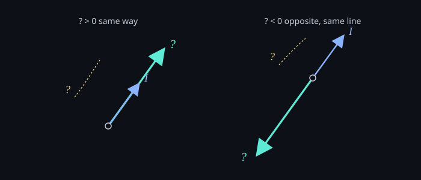

Split from a 2021 class note on spin, magnetic moment, and gyromagnetic ratio.
The gyromagnetic ratio (γ) is the constant between spin I and magnetic dipole moment μ:
μ = γI
γ depends on the nucleus. Most nuclei have γ > 0. Some nuclei, and electrons, have γ < 0. Positive means spin and μ point the same way. Negative means opposite, still on the same line.

That is the three-term chain from the 2021 class note: spin, magnetic moment, gyromagnetic ratio. Next note: Larmor precession.
中文
從 2021 年那篇課間筆記拆出來的。
旋磁比 (γ) 是 spin I 跟磁偶極矩 μ 之間的常數：
μ = γI
γ 看原子核。多數核 γ > 0。有些核、還有電子，γ < 0。正的意思是 spin 跟 μ 指向同一邊。負的是反向，但還是同一條線。
這是 2021 課間筆記的三個詞：spin、磁矩、旋磁比。下一則：拉莫爾進動。